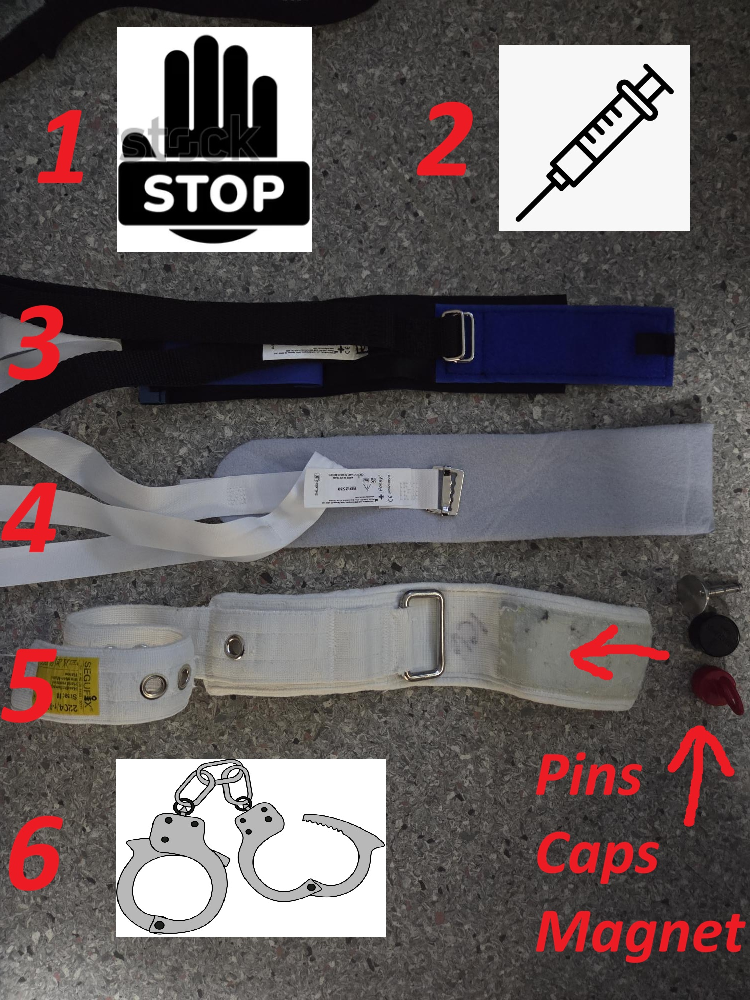
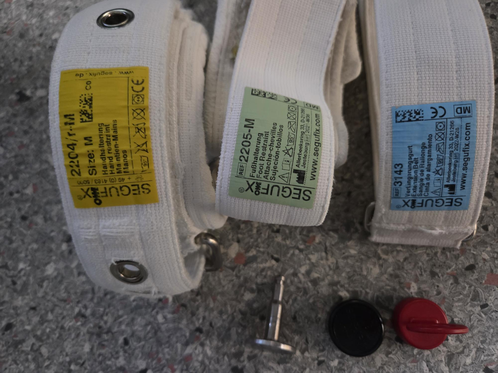
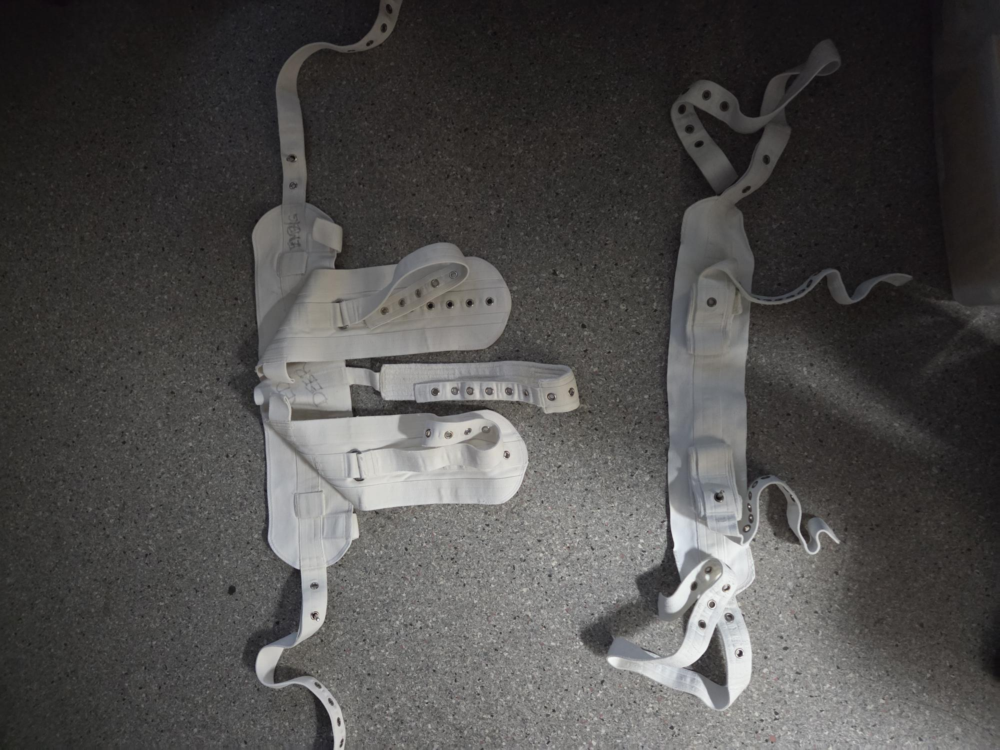

Maps
Grounds and floor maps with click-to-expand viewing.
Red Deer Regional Hospital quick reference
Site Reference
Red Deer site notes, maps, safekeeping, morgue process, authorities, and restraint references.
Grounds and floor maps with click-to-expand viewing.
Intake, receipt, release, and documentation reminders.
Morgue in/out process, SBM, partials, and admissions steps.
Restraint reference images with note cards for your write-ups.


Patient is detained under the mental health act for 24 hours and cannot leave. If they manage to elope, RCMP will be contacted by ER or Unit staff for a warrant to be placed to be brought back. Depending on the situation, they may be paced under a security watch or under interval checks (Q15, Q30, Q60). Check with staff if this is desired.
Custody has been extended from 24 hours to up to 3 months
Treated/Operational the same as a Form 1
Someone went to a judge and essentially got an order for a Form 10
Treated/Operational the same as a Form 1
Protective Services may take over once the individual is in a proper room. Do not take over in the family room.
If the person is calm and unlikely to cause issues, then it may be Treated/Operational the same as a Form 1
This allows medical treatment against the patients will (like forced bloodwork) if necessary.
These are very rare and reqiures three doctors to sign off on
Pataint missed there court mandatied MHA appointment. Often brought in by RCMP PACT Team
Treated/Operational the same as a Form 1
The TL/ATL has final say if a watch cannot be supported due to call volume, short staffing, or site demands.
The morgue is located on the lower level in the hallway leading toward the loading docks.
Go to the unit and escort the nurse with the patient to the morgue. Place the patient on the SBM tray in the cage inside the cooler. Complete the morgue book and take the tag to Admissions.
Swipe into the OR area from the regional main hallway near the patient/porter elevator. Tell the front desk you are there for a partial 10-53 in. Take the yellow container to the morgue and place it inside the cage in the cooler.
No tag or morgue book entry is required for partials.
RDRH is a designated mental health facility, so officer my apprehended someone Form 10 for MHA if required. If you Form 10 someone they are automatically under a security watch. Whether you apprehended or RCMP, a copy of the Form 10 must be attached to the file.
If you complete a Form 10, complete the form, create the Perspective file, attach the Form 10, and complete your notes.
You may inform someone they are trespassed and escort them off property. If they refuse to leave, you may physically escort them off property. If they resist, you can decide to continue with the escort or arrest them transfer custody to RCMP.
It is preferred that the person signs the Trespass Form and receives a copy. If they refuse, write RTS for refused to sign. Attach the form to perspective
If they return without DIRECTLY seeking medical care, remove them from property or arrest them.
Officers at RDRH will likely use these in combination multiple times a shift

1. Verbal = Giving lawful clear verbal directions
2. Chemical = Behavior PRN ordered by staff, use physical or light physical to avoid needle breaking or unintended targets. Behavioral medicine you will encounter are::
3. Velcro = Uncommon (some EMS have) and difficult to use, avoid if possible
4. Soft = geriatric or disoriented individuals. There are two version, single and double straps
5. Segufix = aka mechanical restraints, used with actively combative or cognitive elopement attempts (High Risk)
6. Handcuffs = aka hard restraints. Mostly used in transporting or to secure after a physical restraint
7. Physical = Physical mean force was required, Light physical means with little to no force or resistance

Yellow = Wrists
Green = Feet
Blue = Extension

Used mainly for geriatric or extremely mobile individuals when required. The waist restraint can be difficult to work with. Simplest way the belt faces up and the belt with the extra straps gets secured to the bed.